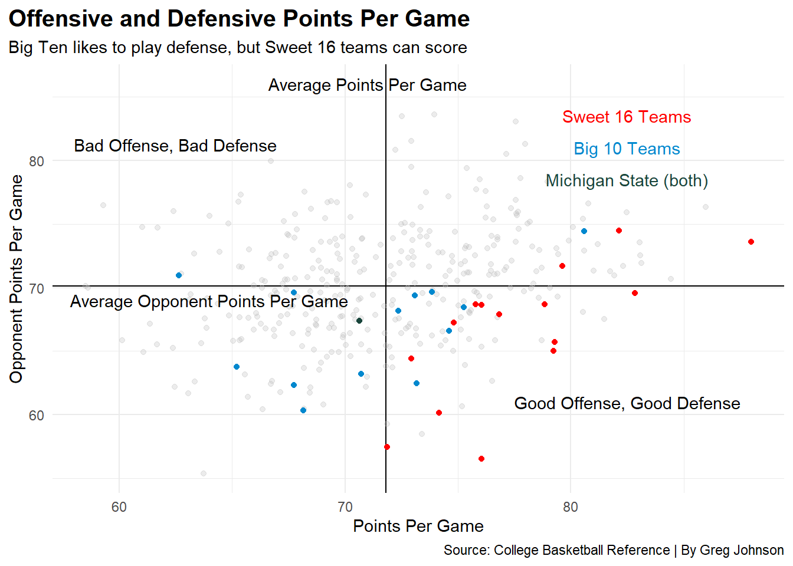
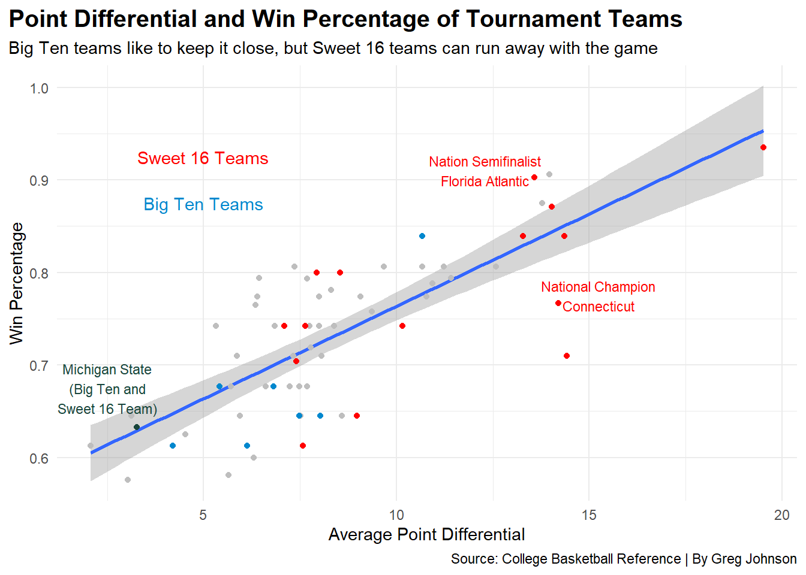

ggplot() +geom_hline(yintercept=70.11547, color="black") +geom_vline(xintercept=71.81432, color="black") +geom_point(data=stats, aes(x=ForPoints/Games, y=OppPoints/Games), size=1.5, color="grey", alpha=.3) +geom_point(data=big, aes(x=ForPoints/Games, y=OppPoints/Games), size=1.75, color="#0088ce") +geom_point(data=sweetdance, aes(x=ForPoints/Games, y=OppPoints/Games), size=1.75, color="red") +geom_point(data=mi, aes(x=ForPoints/Games, y=OppPoints/Games), size=1.75, color="#18453B") +labs(title="Offensive and Defensive Points Per Game",subtitle="The Big Ten likes to play defense, but Sweet 16 teams can score",x="Points Per Game", y="Opponent Points Per Game",caption="Source: College Basketball Reference | By Greg Johnson")+geom_text(aes(x=82.5, y=81.5, label="Sweet 16 Teams"), color="red") +geom_text(aes(x=82.5, y=78.5, label="Big Ten Teams"), color="#0088ce") +geom_text(aes(x=68, y=67, label="Michigan State\n(Big Ten and Sweet 16 Team)"), size=3, color="#18453B") +geom_text(aes(x=82.5, y=60, label="Good Offense,\nGood Defense"), color="black") +geom_text(aes(x=62.5, y=80, label="Bad Offense,\nBad Defense"), color="black") +geom_text(aes(x=69.75, y=82.5, label="Average Points\nPer Game"), size=3, color="black") +geom_text(aes(x=60, y=72, label="Average Opponent\nPoints Per Game"), size=3, color="black") +theme_minimal() +theme(plot.title =element_text(size =15, face ="bold"),plot.title.position="plot" )

That was chart 1, here is chart 2
Code
ggplot() +geom_bar(data=big, aes(x=reorder(School, OverallSOS), weight=OverallSOS), fill="grey" ) +geom_bar(data=bigdance, aes(x=reorder(School, OverallSOS), weight=OverallSOS), fill="#0088ce" ) +coord_flip() +labs(title="Big Ten Strength of Schedule",subtitle="Sparty is not afraid of a fight",x="", y="Strength of Schedule",caption="Source: College Basketball Reference | By Greg Johnson")+geom_text(aes(x="Purdue", y=9.75, label="Tournament\nTeams"), size=3.6, color="#0088ce") +theme_minimal() +theme(plot.title =element_text(size =15, face ="bold"),plot.title.position="plot" )

Another Chart coming up
Code
ggplot() +geom_point(data=residualmodel, aes(x=averagedifferential, y=WinPct)) +geom_smooth(data=residualmodel, aes(x=averagedifferential, y=WinPct), method="lm") +geom_point(data=danceresidual, aes(x=averagedifferential, y=WinPct), color="grey") +geom_point(data=bigdanceresidual, aes(x=averagedifferential, y=WinPct), color="#0088ce") +geom_point(data=sweetdanceresidual, aes(x=averagedifferential, y=WinPct), color="red") +geom_point(data=miresidual, aes(x=averagedifferential, y=WinPct), color="#18453B") +labs(title="Point Differential and Win Percentage of Tournament Teams",subtitle="Big Ten teams like to keep it close, but Sweet 16 teams can run away with the game",x="Average Point Differential", y="Win Percentage",caption="Source: College Basketball Reference | By Greg Johnson") +geom_text(aes(x=5, y=.925, label="Sweet 16 Teams"), color="red") +geom_text(aes(x=5, y=.875, label="Big Ten Teams"), color="#0088ce") +geom_text(aes(x=2.5, y=.675, label="Michigan State\n(Big Ten and\nSweet 16 Team)"), size=3, color="#18453B") +geom_text(aes(x=15.25, y=.775, label="National Champion\nConnecticut"), size=3, color="red") +geom_text(aes(x=12.3, y=.91, label="Nation Semifinalist\nFlorida Atlantic"), size=3, color="red") +theme_minimal() +theme(plot.title =element_text(size =15, face ="bold"),plot.title.position="plot" )